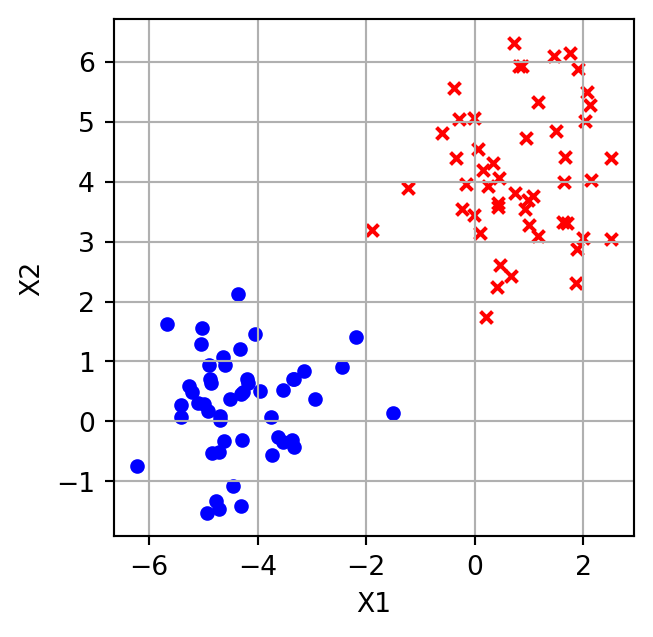
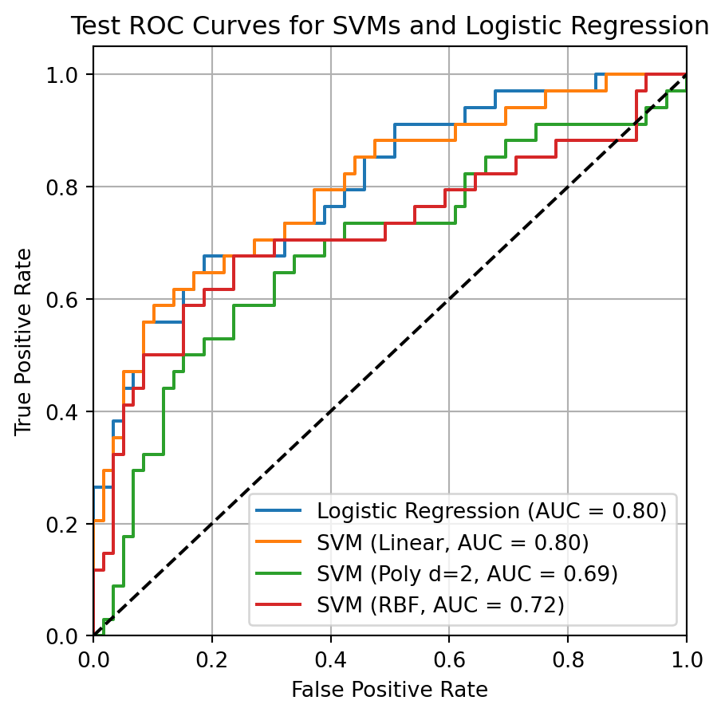
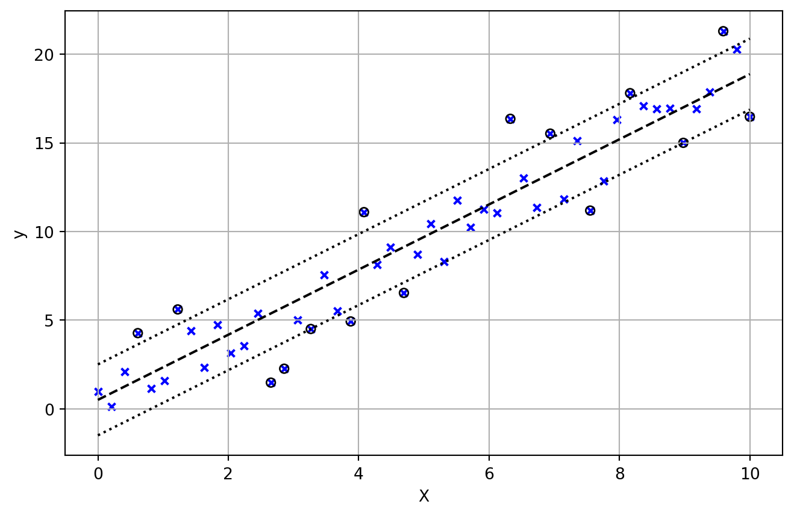

Introduction to Statistical Learning
Support Vector Machines - Class 11
Giora Simchoni
gsimchoni@gmail.com and add #intro2sl in subject
Stat. and OR Department, TAU
Maximum margin classifier
A big assumption
- Suppose \(y \in \{-1, 1\}\)
- Suppose the classes can be separated by a hyperplane, e.g. for data \(T = \{(x_1, y_1), \dots, (x_n, y_n)\}\):
Separating hyperplanes (I)
- \(\beta_0, \beta_1, \dots, \beta_p\) define a \(p\)-dimensional plane for all points \(x \in \mathbb{R}^p\) satisfying: \[\beta_0 + \beta_1x_1 + \dots + \beta_px_p = \beta_0 + x^T\beta = 0\]
- We say \(\beta^* = (\beta_1, \dots, \beta_p) / \|\beta\|\) is normal to the hyperplane
What would be a natural decision rule for separating \(y \in \{-1, 1\}\)?
Separating hyperplanes (II)
In other words, a hyperplane is “separating” iff: \[y_i \cdot (\beta_0 + x_i^T\beta) > 0 \quad \forall i\]
And a natural decision rule for separating hyperplanes: \[\hat{f}(x_0) = \text{sign}\left[\hat{\beta}_0 + x_0^T\hat{\beta}\right]\]
But if there exists a separating hyperplane, how many are there?

Maximum margin classifier
- Intuitively, we would like the hyperplane that is “fartherst” from points on both sides
- That is, the hyperplane that maximizes the margin:
- the minimum distance of training points to the hyperplane
Maximum margin criterion
So far we have:
\(\max_{\beta, \beta_0}\text{"minimum distance"} \quad s.t. \space y_i (\beta_0 + x_i^T\beta) > 0 \quad \forall i\)The distance between any point \(x\) to the hyperplane is: \(\frac{|\beta_0 + x^T\beta|}{\|\beta\|_2}\)
- because this distance is the length of a vector proportional to the normal \(\beta\):
Maximum margin criterion
So for any \(M > 0\) a compact way of writing the criterion is: \[\max_{\beta, \beta_0}M \quad s.t. \space \|\beta\| = 1 \text{ and } \quad y_i (\beta_0 + x_i^T\beta) \ge M \quad \forall i\]
All the points are at least a distance \(M\) from the decision boundary defined by \(\beta, \beta_0\), and we seek \(\beta, \beta_0\) that get the largest such \(M\)
Equivalently if we insist on setting \(\|\beta\| = 1/M\) we can write: \[\min_{\beta, \beta_0}\|\beta\| \quad s.t. \space y_i (\beta_0 + x_i^T\beta) \ge 1 \quad \forall i\]
- because \(M = 1/\|\beta\|\) and maximizing \(M\) is minimizing \(\|\beta\|\)
This is a convex optimization problem (quadratic criterion if we write \(\|\beta\|^2\), linear inequality constraints), many efficient solvers exist
Support vectors
Back to the maximum margin classifier:
- The final classifier depends only on support vectors but was reached given all the training data
- Advantages/disadvantages to a classifier that only depends on few observations
- What would logistic regression do?
- What if there is no separable hyperplane?
- And as usual: this is very specific to binary classification, can we generalize?
Support vector classifier
Not just the non-separable case
Support vectors classifier
- Let us relax our constraints:
- Allow observations to be inside the margin
- Or even on the wrong side of the hyperplane!
- With a “budget” \(C\) for these violations (or penalty)
We do this with the help of “slack variables”: \(\epsilon = (\epsilon_1, \dots, \epsilon_n)\)
The new optimization problem: \[\max_{\beta, \beta_0, \epsilon}M \quad s.t. \space \|\beta\| = 1, \quad y_i (\beta_0 + x_i^T\beta) \ge M(1-\epsilon_i), \quad \epsilon_i \ge 0, \quad \sum_{i = 1}^n \epsilon_i \le C\]
The final prediction is still: \[\hat{f}(x_0) = \text{sign}\left[\hat{\beta}_0 + x_0^T\hat{\beta}\right]\]
SVC: slack variables
\(\max_{\beta, \beta_0, \epsilon}M \quad s.t. \space \|\beta\| = 1, \quad y_i (\beta_0 + x_i^T\beta) \ge M(1-\epsilon_i), \quad \epsilon_i \ge 0, \quad \sum_{i = 1}^n \epsilon_i \le C\)
- \(\epsilon_i\) is the amount by which observation \(x_i\) “violates” the margin:
- If \(\epsilon_i = 0\) then \(x_i\) is on the correct side of the margin
- If \(\epsilon_i > 0\) then \(x_i\) is on the wrong side of the margin
- If \(\epsilon_i > 1\) then \(x_i\) is on the wrong side of the hyperplane!
SVC: the \(C\) parameter
\(\max_{\beta, \beta_0, \epsilon}M \quad s.t. \space \|\beta\| = 1, \quad y_i (\beta_0 + x_i^T\beta) \ge M(1-\epsilon_i), \quad \epsilon_i \ge 0, \quad \sum_{i = 1}^n \epsilon_i \le C\)
- \(C\) is the amount by which the margin may be “violated”:
- If \(C = 0\) then \(\epsilon = \mathbf{0}\), back to maximum margin classifier
- If \(C > 0\) no more than \(C\) observations can be on the wrong side of the hyperplane
How to choose \(C\)? What is the relation between \(C\) and the bias-variance tradeoff?
SVC: equivalent forms
As with maximum margin classifier, if we insist on setting \(\|\beta\| = 1/M\) we can write: \[\min_{\beta, \beta_0, \epsilon}\|\beta\| \quad s.t. \space y_i (\beta_0 + x_i^T\beta) \ge 1-\epsilon_i, \quad \epsilon_i \ge 0, \quad \sum_{i = 1}^n \epsilon_i \le C \quad \forall i\]
In fact, it is more common to see the equivalent form: \[\min_{\beta, \beta_0, \epsilon}\frac{1}{2}\|\beta\|^2 + C \sum_{i = 1}^n \epsilon_i \quad s.t. \space y_i (\beta_0 + x_i^T\beta) \ge 1-\epsilon_i, \quad \epsilon_i \ge 0 \quad \forall i\]
In which case, notice the \(C\) hyperparameter is now a penalty (this is also more similar to how sklearn sees it)
Support vector machines (SVM)
The non-linear case
Recall the Bayes decision boundary example from our Bias-Variance discussion:
Unfortunately, “real data” looks more like this.
Adding polynomial terms?
Similar to polynomial regression we could add quadratic terms: \[\max_{\beta^1, \beta^2, \beta_0, \epsilon}M \quad s.t. \\ \|\beta^1\|^2 + \|\beta^2\|^2 = 1, \quad y_i (\beta_0 + x_i^T\beta^1 + \left(x^2_i\right)^T\beta^2) \ge M(1-\epsilon_i)\] \[\quad \epsilon_i \ge 0, \quad \sum_{i = 1}^n \epsilon_i \le C\]
What about cubic terms? What about interactions?
Like in regression we could expand \(x_i\) to any feature mapping \(h(x_i): \mathbb{R}^p \to \mathbb{R}^q\) and continue as is
But this becomes really high-dimensional, really fast.
The kernel trick (I)
- An amazing insight, after a lot of algebra, our solution can be written as: \[f(x_0) = \text{sign}\left[\beta_0 + x_0^T\beta\right] = \text{sign}\left[\beta_0 + \sum_{i = 1}^n\alpha_i\langle x_i, x_0 \rangle\right]\]
- where:
- \(\langle x_i, x_0 \rangle\) is the inner product \(x_i^Tx_0 = \sum_{j = 1}^p x_{ij}x_{0j}\)
- \(\alpha_i, \dots, \alpha_n\) are \(n\) parameters for \(n\) observations,
- but \(\alpha_i > 0\) only for support vectors, otherwise \(\alpha_i = 0\)
- So for any \(h(x_i)\), the solution can be written in terms of inner products only: \[f(x_0) = \text{sign}\left[\beta_0 + h(x_0)^T\beta\right] = \text{sign}\left[\beta_0 + \sum_{i = 1}^n\alpha_i\langle h(x_i), h(x_0) \rangle\right]\]
The kernel trick (II)
- Now suppose \(x_i = (x_{i1}, x_{i2})\) and \(h: \mathbb{R}^2 \to \mathbb{R}^6\) is: \[h(x_i) = (1, \sqrt{2}x_{i1}, \sqrt{2}x_{i2}, x^2_{i1}, x^2_{i2}, \sqrt{2}x_{i1}x_{i2})\]
- Amazingly, the inner product with any point \(x_0\) is quite compact:
\(\langle h(x_i), h(x_0) \rangle = \begin{pmatrix}1 & \sqrt{2}x_{i1} & \sqrt{2}x_{i2} & x^2_{i1} & x^2_{i2} & \sqrt{2}x_{i1}x_{i2}\end{pmatrix} \begin{pmatrix}1 \\ \sqrt{2}x_{01} \\ \sqrt{2}x_{02} \\ x^2_{01} \\ x^2_{02} \\ \sqrt{2}x_{01}x_{02}\end{pmatrix}=\) \(= (1 + x_i^Tx_0)^2\)
Why is that helpful?
The kernel trick (III)
- Let this be a kernel function: \[\langle h(x_i), h(x_0) \rangle = (1 + x_i^Tx_0)^2 = K(x_i, x_0)\]
- Back to our solution: \[f(x_0) = \text{sign}\left[\beta_0 + \sum_{i = 1}^n\alpha_i\langle h(x_i), h(x_0) \rangle\right] = \text{sign}\left[\beta_0 + \sum_{i = 1}^n\alpha_i K(x_i, x_0)\right]\]
- The kernel trick:
- Forget about specifying \(h(x_i): \mathbb{R}^p \to \mathbb{R}^q\)!
- Focus on specifying kernel functions \(K(x_i, x_j): \mathbb{R}^p \times \mathbb{R}^p \to \mathbb{R}\)
- That is, flexible similarity functions between feature vectors
Common kernels
| kernel | \(K(x_i, x_j)\) | comment |
|---|---|---|
| Linear | \(\langle x_i, x_j \rangle\) | SVC! |
| Polynomial | \((1 + \langle x_i, x_j \rangle)^d\) | For \(p = 2, d = 2\) we got \(h(x)\) |
| Gaussian/SE/RBF | \(\exp\left(-\gamma\|x_i - x_j\|^2\right)\) | infinite feature mapping space! |
| Sigmoid | \(\tanh(\kappa_1\langle x_i, x_j \rangle + \kappa_2)\) |
Each of these implicitly uses some mapping \(h(x)\), but always: \(K(x_i, x_j) = \langle h(x_i), h(x_j) \rangle\)
On entire training set need to compute: \(K_{n \times n}\) (kernel matrix) where \(K_{ij} = K(x_i, x_j) = \langle h(x_i), h(x_j) \rangle\)
Can any \(K(x_i, x_j): \mathbb{R}^p \times \mathbb{R}^p \to \mathbb{R}\) function use as a kernel?
Support vector machines (SVM)
Notice this might add a few hyperparameters, including the kernel itself!
Example: SAHeart data

Notice to compute ROC SVM needs to output a probability or score.
This is out of scope, but you could think of the distance of an observation to the hyperplane as a type of confidence.
SVM extensions
SVM for \(K\) classes
- One-versus-one (OVO):
- Run all \(K \choose 2\) pairwise models: class \(k\) vs. class \(k'\)
- Assign \(x_0\) to class \(k\) to which it was most frequently assigned to
- One-versus-rest (OVR):
- Run all \(K\) models: class \(k\) (\(+1\)) vs. remaining \(K - 1\) classes (\(-1\))
- Assign \(x_0\) to class \(k\) in which it gets the highest distance (confidence) from hyperplane \(\hat{\beta}_{0k} + x_0^T\hat{\beta_{k}}\)
Support vector regression (SVR)

What would be the support vectors for SVR?
SVR Criterion
From maximum margin classifier: \(\max_{\beta, \beta_0}M \quad s.t. \space \|\beta\| = 1 \text{ and } \quad y_i (\beta_0 + x_i^T\beta) \ge M \quad \forall i\)
To “maximum margin regressor” (not really a thing): \(\max_{\beta, \beta_0}M \quad s.t. \space \|\beta\| = 1 \text{ and } \quad |y_i - (\beta_0 + x_i^T\beta)| \le M \quad \forall i\)
From SVC: \(\max_{\beta, \beta_0, \epsilon}M \quad s.t. \space \|\beta\| = 1, \quad y_i (\beta_0 + x_i^T\beta) \ge M(1-\epsilon_i), \quad \epsilon_i \ge 0, \quad \sum_{i = 1}^n \epsilon_i \le C\)
To SVR: \(\max_{\beta, \beta_0, \epsilon}M \quad s.t. \space \|\beta\| = 1, \quad |y_i - (\beta_0 + x_i^T\beta)| \le M + \epsilon_i, \quad \epsilon_i \ge 0, \space \sum_{i = 1}^n \epsilon_i \le C\)
Though this is more common: \[\min_{\beta, \beta_0, \epsilon}\frac{1}{2}\|\beta\|^2 + C \sum_{i = 1}^n \epsilon_i \quad s.t. \space |y_i - (\beta_0 + x_i^T\beta)| \le M + \epsilon_i, \space \epsilon_i \ge 0\]
And of course SVR can be kernelized as well